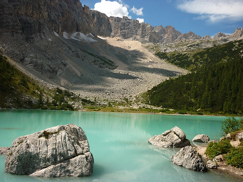

Parco Nazionale delle Dolomiti Bellunesi
Patrimonio UNESCO con cime imponenti, fiori rari come la stella alpina e paesaggi rocciosi unici.
Il Parco Nazionale delle Dolomiti Bellunesi, istituito nel 1993, si estende per oltre 31.000 ettari nella regione del Veneto, abbracciando alcune delle aree più spettacolari delle Dolomiti, riconosciute come Patrimonio dell’Umanità UNESCO. Questo parco, situato interamente nella provincia di Belluno, è famoso per le sue imponenti formazioni rocciose, le valli incontaminate e una straordinaria biodiversità che lo rendono un gioiello naturalistico di fama mondiale.
Le Dolomiti Bellunesi sono celebri per la loro bellezza unica e per la varietà dei paesaggi. Il parco comprende una serie di massicci montuosi tra cui la Schiara, il Pizzocco e le Vette Feltrine, che raggiungono altezze superiori ai 2.500 metri. Le montagne sono caratterizzate da pareti ver ticali, guglie imponenti e vallate profonde, scolpite dall’erosione e dai ghiacciai che un tempo dominavano la zona. Tra le attrazioni più spettacolari si trovano i Monti del Sole, un'area remota e selvaggia, e le Gole del Mis, una serie di canyon spettacolari che offrono scenari suggestivi di rocce e cascate. Questi paesaggi, unici nel loro genere, rappresentano una meta privilegiata per escursionisti e appassionati di natura. Il Parco Nazionale delle Dolomiti Bellunesi è un rifugio per numerose specie animali, molte delle quali rare o protette. Tra i mammiferi, il camoscio alpino è una presenza caratteristica delle aree più alte, mentre il cer vo e il capriolo popolano le zone boschive. La presenza del gallo cedrone e del picchio nero testimonia la qualità dell’ecosistema forestale del parco. Tra i rapaci, l’aquila reale e il gufo reale dominano i cieli, mentre i piccoli abitanti delle rocce, come la marmotta, completano il quadro di una fauna ricca e diversificata. L’ambiente fluviale ospita la rara trota marmorata, simbolo dell’equilibrio ecologico delle acque del parco.
Il parco offre una vasta gamma di attività all’aria aper ta, ideali per chi ama immergersi nella natura incontaminata. Con oltre 200 chilometri di sentieri, gli escursionisti possono scegliere tra percorsi di diverse difficoltà. Tra i più suggestivi c’è il Sentiero delle Farangole, che attraversa paesaggi alpini mozzafiato, e il Sentiero Dino Buzzati, un itinerario dedicato al celebre scrittore bellunese. Gli appassionati di speleologia possono esplorare alcune delle grotte più affascinanti della zona, come la Grotta Azzurra, famosa per le sue suggestive sfumature di colore, mentre chi preferisce esperienze più rilassanti può optare per una passeggiata nelle Gole del Mis, tra cascate, piscine naturali e formazioni rocciose spettacolari. In inverno, il parco offre oppor tunità per le ciaspolate e lo sci alpinismo, che consentono di vivere l’atmosfera magica delle Dolomiti innevate. Durante la primavera e l’estate, invece, il paesaggio si colora di fiori selvatici, rendendo i percorsi par ticolarmente pittoreschi.
La flora del parco è altrettanto affascinante, con una ricchezza botanica
che lo rende un paradiso per gli appassionati di piante e fiori. Le Dolomiti
Bellunesi ospitano circa 1 . 5 00 specie vegetali, alcune delle quali
estremamente rare o endemiche. Tra queste spicca la Campanula
Morettiana, una pianta che cresce esclusivamente sulle rocce dolomitiche,
e la stella alpina, simbolo delle montagne alpine.
Le foreste del parco sono dominate da faggi, larici e abeti rossi, mentre nei
prati alpini fioriscono gigli, orchidee e genziane. Le aree umide, come
quelle delle Gole del Mis, ospitano piante acquatiche e muschi, creando
microambienti di grande interesse naturalistico .
Il Parco Nazionale delle Dolomiti Bellunesi non è solo natura, ma anche
storia e cultura. I villaggi che circondano il parco, come Feltre, Sospirolo e
Cesiomaggiore, conser vano un ricco patrimonio architettonico e tradizioni
antiche. Questi borghi offrono la possibilità di visitare chiese, castelli e
musei che raccontano la storia della regione.
L’eredità culturale del parco si riflette anche nei suoi prodotti tipici, come il
formaggio Piave DOP, che prende il nome dall’omonimo fiume che scorre
nella zona, e la polenta di mais Sponcio, un alimento tradizionale delle
Dolomiti.

La flora del parco è altrettanto affascinante, con una ricchezza botanica che lo rende un paradiso per gli appassionati di piante e fiori. Le Dolomiti Bellunesi ospitano circa 1 . 5 00 specie vegetali, alcune delle quali estremamente rare o endemiche. Tra queste spicca la Campanula Morettiana, una pianta che cresce esclusivamente sulle rocce dolomitiche, e la stella alpina, simbolo delle montagne alpine. Le foreste del parco sono dominate da faggi, larici e abeti rossi, mentre nei prati alpini fioriscono gigli, orchidee e genziane. Le aree umide, come quelle delle Gole del Mis, ospitano piante acquatiche e muschi, creando microambienti di grande interesse naturalistico . Il Parco Nazionale delle Dolomiti Bellunesi non è solo natura, ma anche storia e cultura. I villaggi che circondano il parco, come Feltre, Sospirolo e Cesiomaggiore, conser vano un ricco patrimonio architettonico e tradizioni antiche. Questi borghi offrono la possibilità di visitare chiese, castelli e musei che raccontano la storia della regione. L’eredità culturale del parco si riflette anche nei suoi prodotti tipici, come il formaggio Piave DOP, che prende il nome dall’omonimo fiume che scorre nella zona, e la polenta di mais Sponcio, un alimento tradizionale delle Dolomiti.